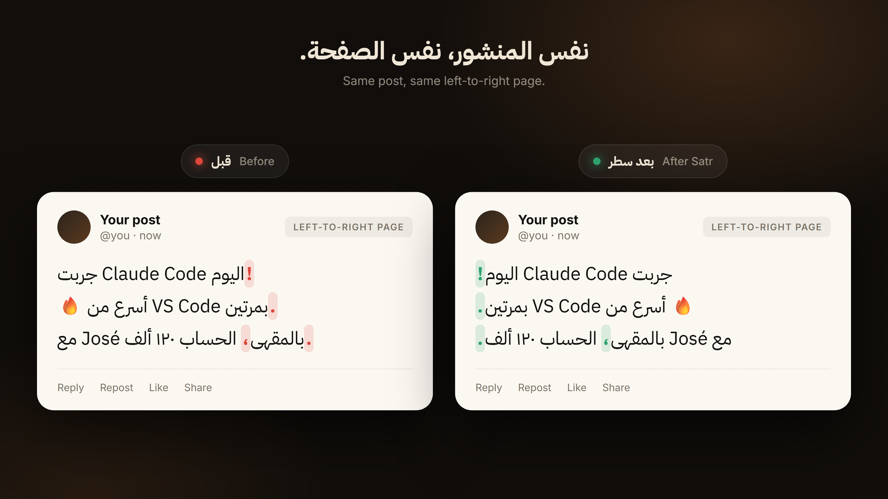

سطر
ثبّت ترتيب الكلمات قبل ما تنشر.
ثبّت المنشور قبل ما ينزل على X وGitHub ومنصات التواصل وكافة المواقع الأخرى.
بعد التثبيت، نفس الصفحة
قبل وبعد، في ١٦ ثانية

إضافة كروم تصلّح القراءة داخل الصفحة. على الهاتف، أضف سطر إلى الشاشة الرئيسية أو شارك النص إليه من أي تطبيق.
من قائمة المتصفح اختر «إضافة إلى الشاشة الرئيسية». بعدها مشاركة أي نص تفتح سطر جاهزاً.